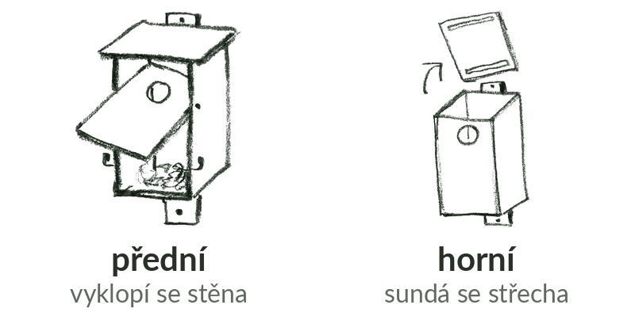

Podle toho, jak se budka otvírá, víš, co vzít s sebou a jak ji na žebříku čistit.

- přední: přední stěna drží na hřebíku nebo vrutu z každé strany, zhruba ve výšce otvoru, a vyklopí se. Zavřenou ji drží obrtlík, otočná západka na boku nebo dole. Staré hnízdo se rovnou vyhodí dolů, proto ho brožury doporučují nejvíc.
- horní: sundává se nebo na pantu odklápí střecha. Hlavně u velkých budek, třeba sovinců. Čistí se hůř: jednou rukou držíš střechu a druhou vybíráš hnízdo shora.
- boční: odklápí se boční stěna, podobně jako přední.
- neotevírá se: polobudky, ze kterých se staré hnízdo vybere otvorem. Jinak budka, která se otevřít nedá, potřebuje opravu: bez čištění se do ní za pár let nic nevejde.
Když nejde otevřít
- Zarezlý obrtlík povol šroubovákem nebo kleštěmi.
- Přitlučenou nebo zarostlou budku na žebříku silou nepáči. Zapiš Vyčištěno „Ne“, důvod „nešla otevřít“ a Stav budky „potřebuje opravu“.
- Chybějící obrtlík nahradí na chvíli i ohnutý hřebík nebo drát, ať se stěna neotevírá sama.